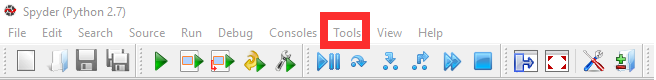
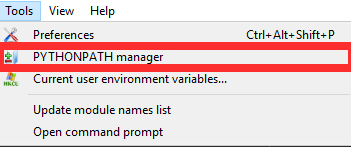
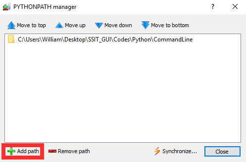

Installation¶
Contents
Installing rSNAPsim¶
Manually Compiling the Stochastic Simulation for C++¶
Download translation_ssa and uncompress it.
Download Eigen and place it in the translation_ssa folder
Windows:
- open a new command prompt
- change directory to the translation_ssa
- run the following command: “python setup.py build_ext”
- if this doesnt work, try adding –inplace at the end of the command
Mac / Linux:
- open a new terminal window
- change directory to the translation_ssa
- run the following command: “python setup.py build_ext”
- if this doesnt work, try adding –inplace at the end of the command
then add ssa_translation to your python path
import sys
sys.path #prints current packages
sys.path.append('directory of translation_ssa folder')
From here the C++ library for under sms.ssa_solver or sms.ssa
Adding rSNAPsim to System path directly¶
Python enviroment variables can be accessed and adjusted by opening a new Python console and appending sys.path
import sys
sys.path #prints current packages
sys.path.append('directory of downloaded rSNAPsim')
Adding rSNAPsim to Spyder IDE¶
Tools > PYTHONPATH Manager > Add path > select directory to rSNAPsim


